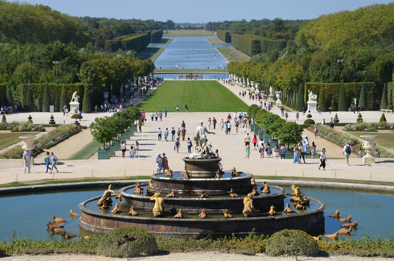
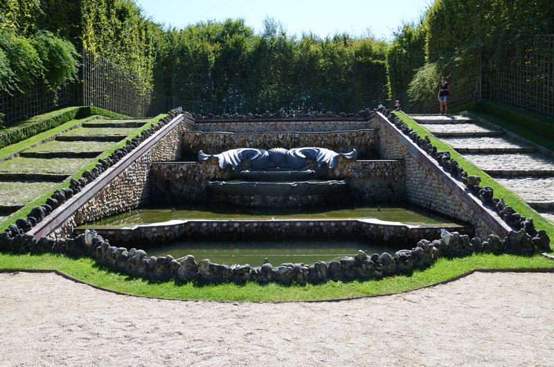
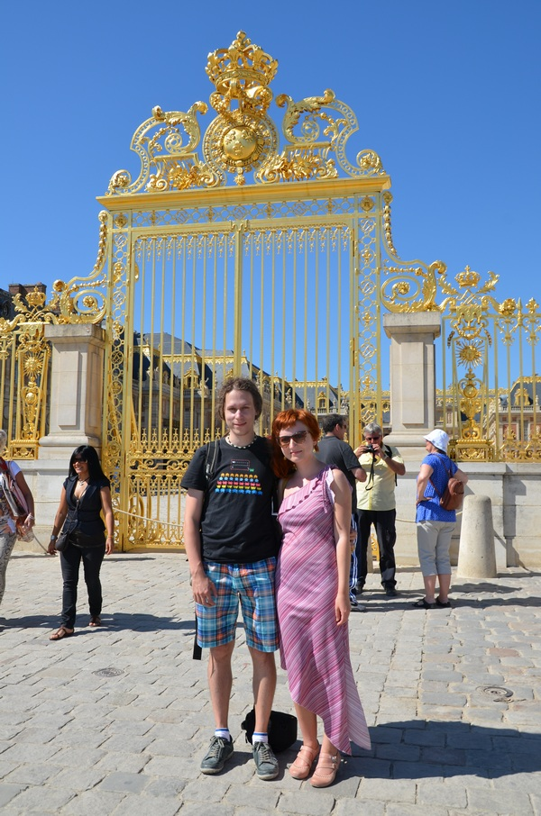
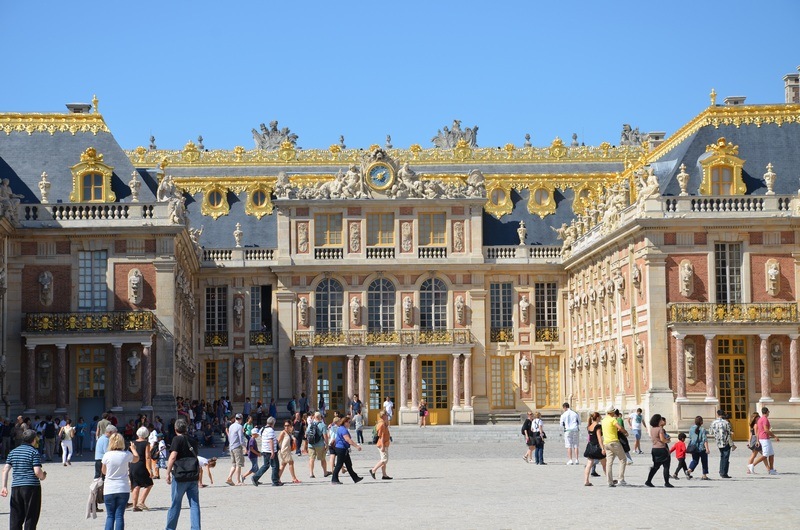
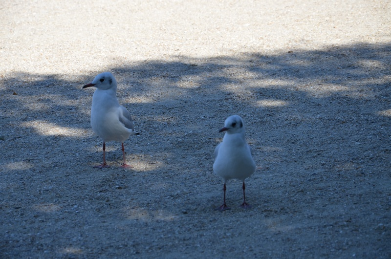
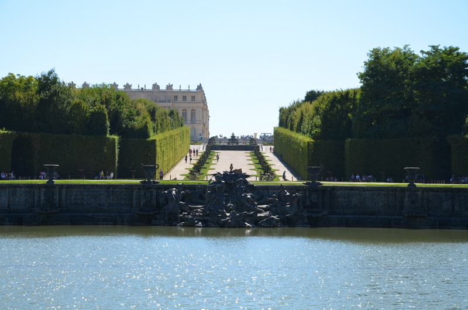
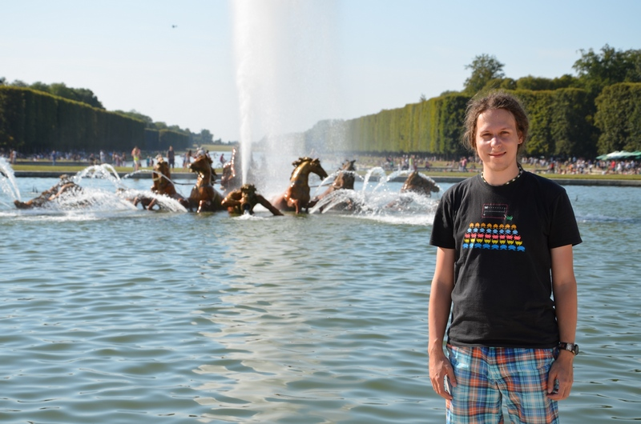
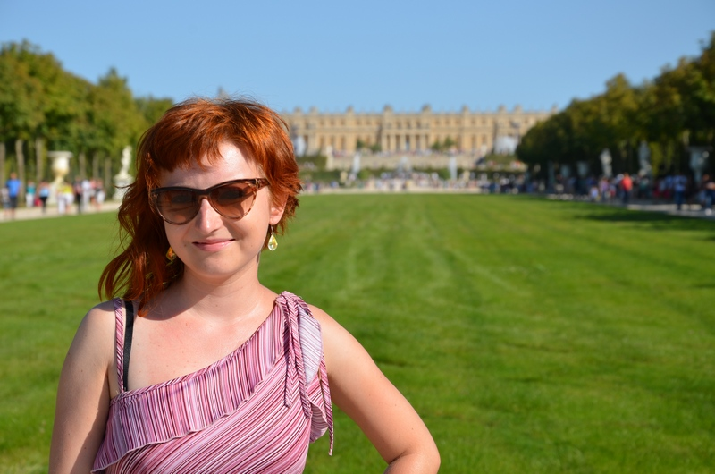
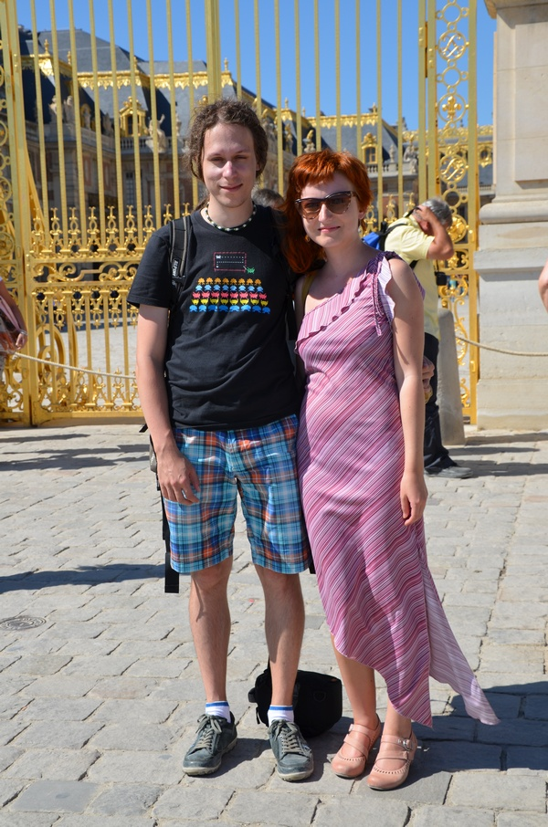

Popravdě řečeno… do Versailles jsme jeli tak trochu z povinnosti :D. Moc se nám tam nechtělo, protože je to přece “jenom zámek”, ale když nám všichni doma tvrdili, že tam prostě musíme, rozhodli jsme se v neděli vyrazit, “ať to máme z krku”. No a co myslíte? Vyklubal se z toho ten nejkrásnější výlet a jedna z nejhezčích vzpomínek na Francii, kterou jsme si přivezli domů. Jestli budete mít někdy možnost a počasí bude přát, neváhejte jako my - Versailles je mnohem víc než “jenom zámek” :-)…

Zámecký park v celé své kráse
Přestože jsme tedy výlet nijak zvlášť neplánovali, nevědomky jsme si vybrali pro návštěvu královského sídla ten nejlepší možný den. Jednak nám počasí naposledy dopřálo tropické teploty a bezmráčkové azůro na nebi, ale především - byla neděle a trefili jsme se tak do dne, kdy ve Versailles za doprovodu hudby uvádí do chodu fontány v zámeckém parku. Je to show, za kterou se platí (Versailles se tak staly spolu s Eiffelovkou jedinými dvěma atrakcemi, u kterých jsme platili vstupné), ale rozhodně to stojí zato.


Nejprve jsme se ale samozřejmě museli do Versailles nějak dopravit, protože zámek se nachází asi 20km od Paříže a je možné se tam dostat speciálními RER vlaky. Poté, co jsme si nakoupili v Monoprixu svačinku na cestu (překvapilo mě, že v neděli i takhle velký supermarket zavírá už v jednu odpoledne :-O), vydali jsme se na zastávku metra. Cestou jsme se prošli přes pravý nefalšovaný francouzský trh plný všeho možného. Exotické ovoce, ryby, sýry, maso, mořské plody a saláty - opravdu pokušení pro naše mlsné chuťové pohárky :D! Samozřejmě se tu ale dá nakoupit i všelicos jiné - přes oblečení až po věci do domácnosti. Všude tlačenice, vůně jídla a francouzské babičky s nákupníma taškama na kolečkách :-).

Kaskádové fontány
V metru jsme se nejprve pokoušeli přeptat paní na informacích, jaký lístek si máme koupit - ta však mluvila pouze francouzsky a odkázala nás na automat opodál. Nakonec jsme to tedy zvládli i bez její pomoci 8-), ale je to ostuda, že na informacích v metru zaměstnávají člověka, co neumí anglicky. Nebyli jsme si jistí, jestli si lístek na RER můžeme cvaknout už teď v metru, nakonec jsme se ale rozhodli to vyzkoušet, protože jsme si říkali, že RER vlaky jsou asi na metro nějak napojené a už pak přes žádný turniket nepůjdeme. K našemu zděšení nás však ještě na RER přestupu jeden turniket čekal. Každopádně to dopadlo tak, že když jsme do něj naše již cvaklé lístky vložili, turniket je zblajznul a normálně nás pustil dál. Doteď nechápu, jak je to možný a na jakém principu to celé funguje. Tak či tak jsme se dostali na nástupiště RER - mimochodem je to tam dost mizerně značené a nebyli jsme si do poslední chvíle jistí, jestli nás onen vlak skutečně zaveze tam, kam potřebujeme :D. Neřídili jsme se žádným jízdním řádem - vlaky do Versailles jezdily co půl hodina, takže jsme ani nemuseli dlouho čekat. Zpočátku jsme jeli pod zemí a až posléze vagon vyjel nahoru a my jsme tak znovu spatřili Eiffelovku i nábřeží s mini Sochou svobody :-). Cesta utekla velice rychle a za chvíli už jsme byli vrženi do příšerné tlačenice, protože Versailles se toho dne rozhodla navštívit snad celá Paříž.

Před zámkem

Versailles
Chtěli jsme se co nejdříve dostat do parku, tam si někde ve stínu roztáhnout deku a v klidu se kochat. Podle plánku, který jsme dostali u vstupu, tu měla být nějaká prostranství vyhrazená přímo pro piknik. Když jsme ale k jednomu takovému došli, zjistili jsme, že je to jen řada dřevěných stolků a židliček bez trávy a piknikovat je tu asi jinak zakázané :(. Uchýlili jsme se tedy nakonec lehce zklamáni do stínu na příjemně chladnou kamennou lavičku a dali si sváču u Neptunovy fontány. Péťa se tam skamarádil s “holoubátkem” (víte, byl to racek, ale to holoubátko už jsme mu neodpárali :D) a chvilku jsme se bavili tím, že jsme mu házeli zbytky včerejší bagety.

“Holoubátko” s plovacíma blánama :D

Neptunova fontána
Po odpočinku jsme se pomalu vydali zpátky k první fontáně, protože už se blížila půl čtvrtá a s ní i zahájení programu. Fontány jsou krásné i samy o sobě, ale za chodu to byla prostě nádhera a myslím, že ani fotky to nedokážou pořádně popsat.


Zámecký park je skutečně obrovský a my stihli projít jen jeho malý zlomek, přestože jsme ve Versailles strávili celý den. Na Velký a Malý Trianon, stejně jako na “farmu” Marie-Antoinetty se vůbec nedostalo. Byli jsme rádi, že jsme si vůbec stihli projít ta nejzajímavější zákoutí - a že nám některá opravdu vyrazila dech…

Apollónův vůz

A teď hurá lehnout někam do trávy :)!
Když už jsme skutečně nemohli dál, vyšli jsme ven z placeného parku a dostali jsme se k rybníku, na jehož březích už si klidně můžete rozložit deku a válet se na trávě dle libosti. Po vzoru ostatních jsme tak také učinili :-). Navzdory spoustě dětí pobíhajících a řádících všude okolo to Péťa tvrdě zalomil a já si četla svůj oblíbený časopis Svět potravin ;-). Když už byl čas pomalu zvednout kotvy, vydali jsme se ještě do nedalekého lesíka pro kešku, ale bohužel jsme ten den nebyli úspěšní :(. Při zpáteční cestě jsme pak prostě nasedli do prvního vlaku, který jsme viděli stát na peróně a díkybohu nás odvezl tam, kam jsme potřebovali. S nějakým značením se tu opět nikdo neobtěžoval :D…

Versailles a my :)
Tak doufám, že se vám dnešní výlet ve Versailles líbil. Zítra nás čeká Vítězný oblouk, Champs Elysée a Mona Lisa. A samozřejmě taky nějaké ty francouzské dobroty, ale na ty se mi teď na noc radši nechce moc myslet :D…
Komentáře (3)
Komentáře jsou uzavřené.